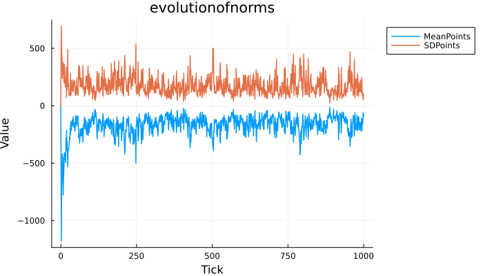
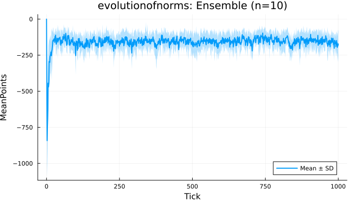
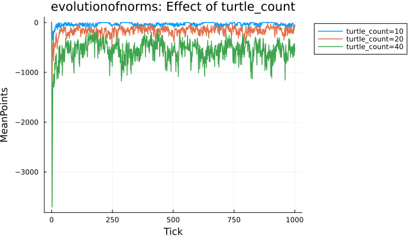

EvolutionOfNorms
Overview
WHAT IS IT?
Model constructed based on Axelrod (1986) An Evolutionary Approach to Norms. Axelrod’s proposed norms game provides a game-theoretic/evolutionary simulation of how norms might evolve in a community based on negative feedback through punishment.
HOW IT WORKS
20 agents are created with random boldness and vengefulness of 0-7. With each run, an agent has four opportunities to “defect” (ie. carry out a negative behaviour) based on their boldness and a random likeliness of being caught. a defection carries a positive score of 3 and a loss of 1 to all other agents.
If other agents observe the defection they choose to punish it with a likelihood based on their vengefulness level. Punishment is -9 to the defecting agent, with a -2 cost to the punishing agent.
In the “metanorms” condition, agents are also punished if they chose not to punish an observed defector.
After each round, the agents with the best scores reproduce the most (i.e. carry their boldness and vengefulness levels through to the next run). There is also a 1% likelihood of mutation.
THINGS TO NOTICE
According to Axelrod, the model will either converge on zero boldness and some vengefulness (due to the cost of being punished), or a full norm violation condition where all agents defect and boldness becomes maximised (and no one is being punished as they are all at it!). In my test, the latter condition only arises rarely.
In the metanorms condition, convergence on a stable state of high vengefulness is more rapid and predictable - as enacting a punishment is reinforced.
THINGS TO TRY
Try repeating the 100 runs and note how sometimes a mutation seems to lead to 100% defections by the end, though usually it converges on low boldness and mid vengefulness.
CREDITS AND REFERENCES
v1.0 Paul Matthews, 2015. University of the West of England. paul2.matthews@uwe.ac.uk
AXELROD, R., 1986. An Evolutionary Approach to Norms. The American Political Science Review, 80(4), pp. 1095-1111
Parameters
| Parameter | Type | Default | Description |
|---|---|---|---|
turtle_count | Int | 20 | turtle count |
metanorm | Bool | true | metanorm |
max_ticks | Int | 1000 | max ticks |
Source Code
The Julia code to run this model:
using ArkModelZoo
_, trajectory = run_evolutionofnorms()Time Series

Ensemble Runs
Ten replicates with different random seeds, showing mean ± standard deviation.

Parameter Sensitivity
Varying turtle_count.

Appendix: Source Code
This model is implemented in the Ark.jl Entity-Component-System (ECS) framework. The code is split into five files, each with a distinct role:
- Parameters: a mutable struct holding all configurable values.
- Components: lightweight data types attached to individual entities (agents).
- Resources: world-level shared state accessible to all systems.
- Systems: functions that operate on entities each tick, defining model behavior.
- Model: wiring that assembles the world, registers resources and systems, and provides the run entry point.
Parameters (parameters.jl)
The parameter struct uses @kwdef so that every field has a default value and can be overridden by keyword. These defaults match the original NetLogo model’s slider settings.
Base.@kwdef mutable struct NormParams
turtle_count::Int = 20
metanorm::Bool = true
max_ticks::Int = 1000
seed::Int = 42
endComponents (components.jl)
Components are lightweight data types attached to individual entities (agents). Mutable structs hold per-entity state, while empty tag structs act as markers for the ECS query system to efficiently filter entities.
# Agent traits: boldness (0-7), vengefulness (0-7), accumulated points, seen value
mutable struct NormAgent
boldness::Int
vengefulness::Int
points::Float64
seen::Float64
end
NormAgent() = NormAgent(0, 0, 0.0, 0.0)Resources (resources.jl)
Resources are world-level singletons shared across all systems, used for global state and aggregate statistics.
mutable struct NormStats
mean_points::Float64
sd_points::Float64
defections::Int
end
NormStats() = NormStats(0.0, 0.0, 0)Systems (systems.jl)
Systems contain the model logic and execute in a defined order each tick. Each system struct implements either initialize! (run once at setup) or update! (run every tick).
# --- Initialization ---
struct InitNormSystem <: System end
function initialize!(::InitNormSystem, world::World)
params = get_resource(world, NormParams)
rng = get_resource(world, RNGResource).rng
for _ in 1:params.turtle_count
new_entity!(world, (NormAgent(rand(rng, 0:7), rand(rng, 0:7), 0.0, 0.0),))
end
return nothing
end
# --- Interaction ---
# Each turtle repeats 4 rounds. May defect, others may punish/meta-punish.
# Points are modified in real-time. seen? is a turtle-own used as observation probability.
mutable struct NormInteractionSystem <: System
entities::Vector{Tuple{Entity, Int}} # (eid, index into agents array)
agents::Vector{NormAgent} # cached references
agent_eids::Vector{Entity} # all entity IDs
end
NormInteractionSystem() = NormInteractionSystem(
Tuple{Entity, Int}[], NormAgent[], Entity[],
)
function update!(system::NormInteractionSystem, world::World)
params = get_resource(world, NormParams)
rng = get_resource(world, RNGResource).rng
stats = get_resource(world, NormStats)
stats.defections = 0
# Collect all agents into a flat array for O(1) random access
empty!(system.agents)
empty!(system.agent_eids)
for (eids, agents) in Query(world, (NormAgent,))
@inbounds for i in eachindex(agents)
push!(system.agents, agents[i])
push!(system.agent_eids, eids[i])
end
end
n = length(system.agents)
n == 0 && return nothing
# Random order for outer ask
order = randperm(rng, n)
for idx in order
agent = system.agents[idx]
for _ in 1:4
punishcount = 0
metapunishcount = 0
agent.seen = rand(rng)
if agent.seen < agent.boldness / 7.0
# Defect: gain 3 points
agent.points += 3.0
stats.defections += 1
# ask other turtles (random order)
other_order = randperm(rng, n)
for oidx in other_order
oidx == idx && continue # skip self
other = system.agents[oidx]
other.points -= 1.0 # all others lose 1
# Observation: uses OTHER turtle's seen value
if rand(rng) < other.seen
punish_roll = rand(rng)
if other.vengefulness / 7.0 > punish_roll
# Punish
punishcount += 1
other.points -= 2.0
else
# Non-punisher may get meta-punished
if params.metanorm
metapunishcount = 0
# ask other turtles of the non-punisher
meta_order = randperm(rng, n)
for midx in meta_order
midx == oidx && continue # skip non-punisher
meta_agent = system.agents[midx]
if rand(rng) < meta_agent.seen
metapunishcount += 1
meta_agent.points -= 2.0
end
end
other.points -= 9.0 * metapunishcount
end
end
end
end
agent.points -= 9.0 * punishcount
end
end
end
return nothing
end
# --- Reproduction ---
# All turtles die. High fitness → hatch 2, medium → 1, low → 0.
# Population adjusted to turtle_count. Then 1% mutation.
mutable struct NormReproductionSystem <: System
offspring::Vector{Tuple{Int, Int, Float64}} # (boldness, vengefulness, seen)
end
NormReproductionSystem() = NormReproductionSystem(Tuple{Int, Int, Float64}[])
function update!(system::NormReproductionSystem, world::World)
params = get_resource(world, NormParams)
rng = get_resource(world, RNGResource).rng
stats = get_resource(world, NormStats)
# Collect agents and compute stats
agents = NormAgent[]
eids = Entity[]
for (es, avs) in Query(world, (NormAgent,))
@inbounds for i in eachindex(avs)
push!(agents, avs[i])
push!(eids, es[i])
end
end
n = length(agents)
n == 0 && return nothing
points = [a.points for a in agents]
mn = sum(points) / n
sd = n > 1 ? sqrt(sum((p - mn)^2 for p in points) / (n - 1)) : 0.0
# NetLogo uses population std dev (not sample), but let's check:
# standard-deviation in NetLogo uses N-1 denominator (sample std dev)
# Actually, NetLogo standard-deviation uses N-1. So the above is correct.
stats.mean_points = mn
stats.sd_points = sd
empty!(system.offspring)
# Process in random order (ask turtles)
order = randperm(rng, n)
for idx in order
a = agents[idx]
if a.points >= mn + sd
push!(system.offspring, (a.boldness, a.vengefulness, a.seen))
push!(system.offspring, (a.boldness, a.vengefulness, a.seen))
elseif a.points >= mn - sd
push!(system.offspring, (a.boldness, a.vengefulness, a.seen))
end
# All turtles die (handled below)
end
# Remove all current turtles
for e in eids
is_alive(world, e) && remove_entity!(world, e)
end
# Spawn offspring (inherit seen from parent, as NetLogo hatch inherits turtle-owns)
for (b, v, s) in system.offspring
new_entity!(world, (NormAgent(b, v, 0.0, s),))
end
# Adjust population to turtle_count
current_count = length(system.offspring)
diff = params.turtle_count - current_count
if diff < 0
# Too many: kill newest (highest who → last spawned)
new_eids = Entity[]
for (es, _) in Query(world, (NormAgent,))
@inbounds for i in eachindex(es)
push!(new_eids, es[i])
end
end
# Remove from end (newest entities)
for _ in 1:(-diff)
isempty(new_eids) && break
e = pop!(new_eids)
is_alive(world, e) && remove_entity!(world, e)
end
elseif diff > 0
# Too few: add random agents
for _ in 1:diff
new_entity!(world, (NormAgent(rand(rng, 0:7), rand(rng, 0:7), 0.0, 0.0),))
end
end
# 1% mutation on boldness and vengefulness
for (_, avs) in Query(world, (NormAgent,))
@inbounds for i in eachindex(avs)
if rand(rng) <= 0.01
avs[i].boldness = rand(rng, 0:7)
end
if rand(rng) <= 0.01
avs[i].vengefulness = rand(rng, 0:7)
end
end
end
return nothing
end
# --- Stats (computed in reproduction) ---
struct NormStatsSystem <: System end
function update!(::NormStatsSystem, world::World)
return nothing
end
# --- Termination ---
struct NormTerminationSystem <: System end
function update!(::NormTerminationSystem, world::World)
params = get_resource(world, NormParams)
tick = get_resource(world, Tick)
if tick.tick + 1 >= params.max_ticks
get_resource(world, Terminate).stop = true
end
return nothing
endModel (model.jl)
The model file assembles all pieces: it creates the ECS World with the required component types, registers resources, builds the Scheduler with systems in execution order, and exposes the public run entry point. The observer pattern records the trajectory each tick.
function evolutionofnorms_world(; initial_capacity::Int = 256)
return World(
NormAgent;
initial_capacity = initial_capacity,
allow_mutable = true,
)
end
function evolutionofnorms_systems()
return (
InitNormSystem(),
NormInteractionSystem(),
NormReproductionSystem(),
NormStatsSystem(),
NormTerminationSystem(),
)
end
function evolutionofnorms_model(params::NormParams = NormParams())
world = evolutionofnorms_world()
_add_standard_resources!(world, params)
add_resource!(world, NormStats())
scheduler = Scheduler(world, evolutionofnorms_systems())
initialize!(scheduler)
return scheduler
end
struct NormObserver end
function norm_headers(::NormObserver)
return ["MeanPoints", "SDPoints"]
end
function norm_values(::NormObserver, world::World)
stats = get_resource(world, NormStats)
return Float64[stats.mean_points, stats.sd_points]
end
function run_evolutionofnorms(; params::NormParams = NormParams(), observe::Bool = true)
return _run_model(evolutionofnorms_model, NormObserver(), norm_values; params, observe)
end